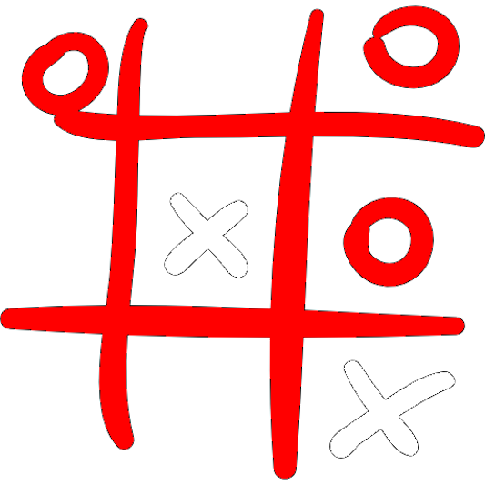
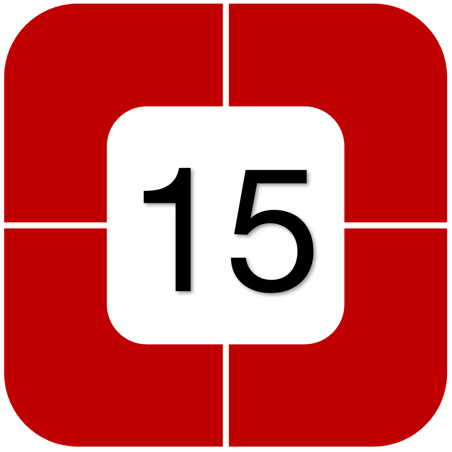
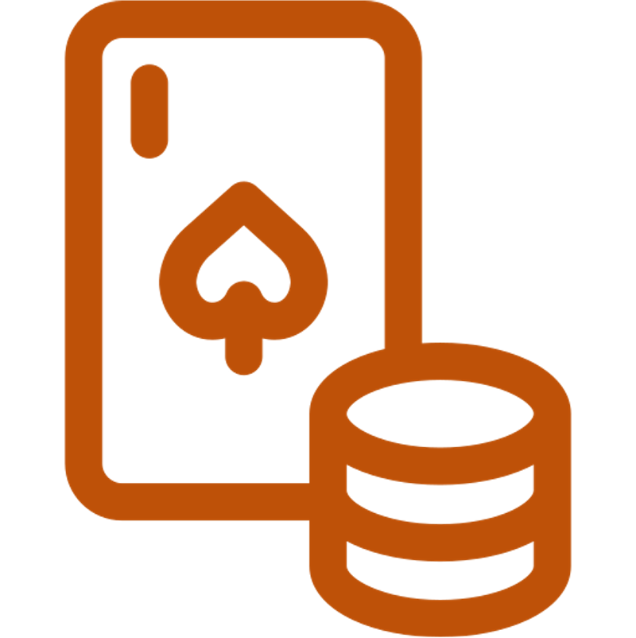

Il Portale di Nicola
Giochi
Ecco a voi la nuova pagina home dei giochi. Mi scuso in anticipo se i giochi saranno un po' buggati alle volte.
Questo è un easter-egg necessario: non riuscivo a trovare il modo
per staccare con il CSS e allora ho fatto questo paragrafo nascosto. Se l'hai trovato ti faccio i complimenti




Altro paragrafo fatto per staccare